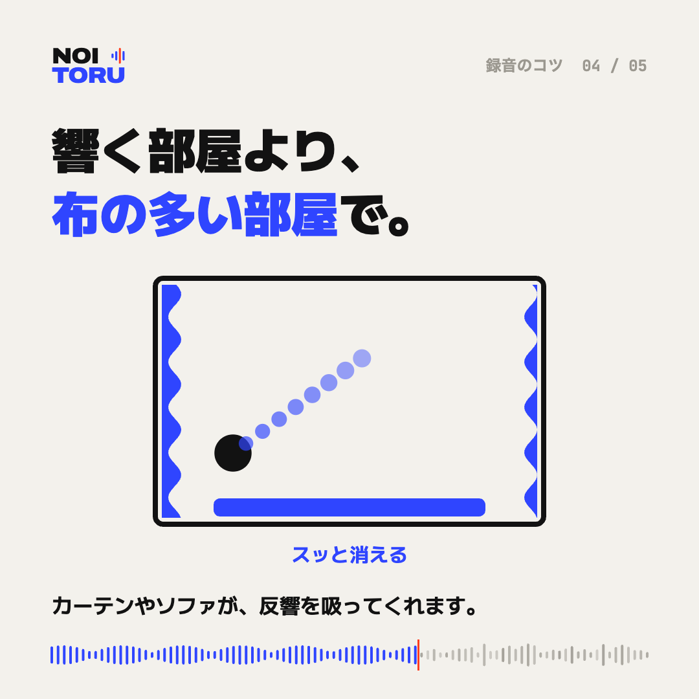

響く部屋より、布の多い部屋で録る

響きは、言葉の切れ目を埋めてしまう
壁や床がかたい部屋では、声が跳ね返って少し遅れて届きます。その響きが次の言葉と重なり、もごもごとした録音になります。
カーテン、ソファ、じゅうたん
布の多い部屋ほど響きは少なくなります。カーテンを閉める、ソファのある部屋を選ぶ、といった工夫だけでも違いが出ます。会議室なら、壁ぎわより部屋の中ほどで、録音機を話す人に近づけてください。
お風呂場や階段は避ける
タイルやコンクリートの空間は、とくに響きます。静かでも、響く場所は録音に向きません。
響いてしまった録音は
響きはあとから抑えることもできますが、強く抑えると声が不自然になります。響きの強い録音は、良くなる程度が小さくなることがあります。